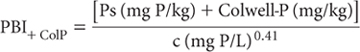
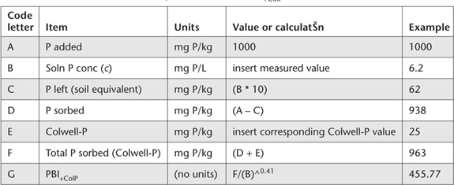

ASPAC in 2001 adopted PBI as its preferred method for characterising the P buffer capacity (P sorptivity or P ‘fixing’ ability) of soils. The index was developed to be applicable across Australian soils, and has been correlated with other indices for measuring PBC. The development of PBI+ColP and PBI+OlsenP and their relationships to other single point indices, is described in Burkitt et al. (2002).
PBI+ColP or PBI+OlsenP can be used to: (a) assess the potential for leaching of soluble P through the soil; (b) adjust ‘critical’ Colwell-extractable P (Colwell 1963) values or ranges for optimum crop/pasture production; and (c) calculate ‘capital’ P fertiliser requirements for raising the existing Colwell- or Olsen-extractable P (Olsen et al. 1954) level to the appropriate ‘critical’ level.
This method (PBI+ColP) utilises the Colwell-P test as the measure of current soil P fertility. It also incorporates the colorimetric Murphy and Riley (1962) analytical finish. Alternative analytical finishes for the PBI component are provided that can slightly affect the results. A similar suite of methods (Methods 9I3a, b, c) provide for the use of Olsen-P as the measure of current soil P fertility, while Method 9I4 excludes a measure of current soil P fertility.
0.01 M CaCl2
Dissolve 1.4702 g calcium chloride dihydrate (CaCl2.2H2O) in deionised water and make volume to 1.0 L.
Reagent A (Ammonium Molybdate – Sulfuric Acid – Sb Solution)
Dissolve 12.0 g ammonium molybdate [(NH4)6Mo7O24.4H2O] in 400 mL of warm (not above 50°C) distilled (preferred) or deionised water. Cool then add 140 mL sulfuric acid (H2SO4; 18 M) slowly and with stirring to another 400 mL distilled or deionised water and re-cool. In a further 100 mL distilled or deionised water, dissolve 0.2669 g potassium antimony tartrate (KSbO.C4H4O6). Combine by adding initially the ammonium molybdate solution to the diluted H2SO4, stirring continuously. Re-cool, add the potassium antimony tartrate solution and make volume to 1.0 L. Store in borosilicate glass at ≈4°C to achieve a shelf life of several months. This solution contains 1.2% ammonium molybdate and 0.1 mg Sb/mL in ≈2.5 M H2SO4. See Note 1 of Method 9B2 on the reason for preferring distilled water.
Mixed Colour Reagent
For each 100 mL required, dissolve 1.056 g l-ascorbic acid (C6H8O6) in 100 mL of Reagent A. Prepare only as required as the shelf life does not exceed 24 h.
Phosphate Equilibrating Solution
1 L contains 100 mg P.
Dissolve 2.1964 g potassium dihydrogen orthophosphate (KH2PO4; previously dried at 130°C for 2 h) in deionised water. Also dissolve 7.351 g calcium chloride (CaCl2.2H2O) in deionised water. Mix, and make volume to 5.0 L. Add 10 drops of chloroform (CHCl3) to suppress biological activity. Store the solution in borosilicate glass, preferably cool (≈4°C) and in the dark, where it remains stable for at least 6 months.
Phosphorus Primary Standard
1 L contains 100 mg P.
Dissolve 0.4393 g potassium dihydrogen orthophosphate (KH2PO4; previously dried at 130°C for 2 h) in deionised water. Also dissolve 1.4702 g calcium chloride (CaCl2.2H2O) in deionised water. Mix, and make volume to 1.0 L. Add 2 drops of chloroform (CHCl3) to suppress biological activity. Store the solution in borosilicate glass, preferably cool (≈4°C) and in the dark, where it remains stable for at least 6 months.
Add aliquots of the P Primary Standard to 0.01 M CaCl2 to achieve final working standards ranging from 0 to 10 mg P/L in 0.01 M CaCl2.2H2O for the Murphy and Riley (1962) analytical finish.
Weigh 7.0 g air-dry soil (<2 mm) into a 100 mL bottle or centrifuge tube and add 70 mL of P Equilibrating Solution and 3 drops of chloroform (CHCl3) (other weight/volume combinations can be used provided a soil/solution ratio of 1:10 is preserved and the head space in the extracting vessel is about 25% of the total vessel volume). Stopper and shake for 17 h continuously end-over-end (e.g. 15 rpm, 20 cm radius) at 25°C. Centrifuge at 3000 rpm [RCF = 2096 G] or filter (Whatman No.5) to obtain uncontaminated, particulate-free supernatant solutions for P analysis. Contact time between supernatant and soil should not exceed 1 h.
For the Murphy and Riley (1962) analytical finish, dilute the cleared soil extracts 1+9 with 0.01 M CaCl2 and pipette 5 mL aliquots of the diluted extracts and working standards (0 to 10.0 mg P/L) in 50 mL volumetric flasks. Add sufficient 0.01 M CaCl2 to give an approximate volume of 40 mL. Dispense 4.0 mL Mixed Colour Reagent into each flask, make to volume with 0.01 M CaCl2, and mix.
Maintain a fixed time schedule for these operations including thorough mixing of flask contents. After 30 min, read absorbance at 882 nm in a 10 mm or other suitable cell (colour remains stable for some time beyond 30 min). Alternatively, an automated analytical finish can be used, guided by Method 9F2.
Calculate the amount of freshly sorbed P (Ps) in the soil (mg P/kg) as the difference between the initial amount of P added (=1000 mg P/kg at the specified soil/solution ratio of 1:10) and the amount of P left in the equilibrating solution, expressed as mg P/kg air-dry soil. The latter is calculated by multiplying the final solution P concentration (c in mg P/L) by 10 (because the soil/solution ratio is 1:10).
As PBI is derived from the Freundlich equation for describing the relationship between total P sorbed and final solution P concentration (i.e. the P sorption curve), the total amount of P sorbed by the soil is calculated as the amount of previously sorbed P, plus the amount of freshly sorbed P. The previously sorbed P is estimated as the Colwell-extractable P (Colwell 1963) status of the soil. The ‘total P sorbed’ for use in calculating PBI is therefore the addition of the Colwell-P to the amount of freshly sorbed P as calculated earlier.
The relevant PBI+ColP equation (see Note 1) is:

where:
Ps = freshly sorbed P (mg P/kg); and
c = final solution P concentration (mg P/L)
Report PBI+ColP on an air-dry (40°C) basis.
Table 9.7. Data and calculatŠns required to calculate PBI+ColP.

1. Calculations can be conveniently performed on a computer spreadsheet. Guidance is provided in Table 9.7.